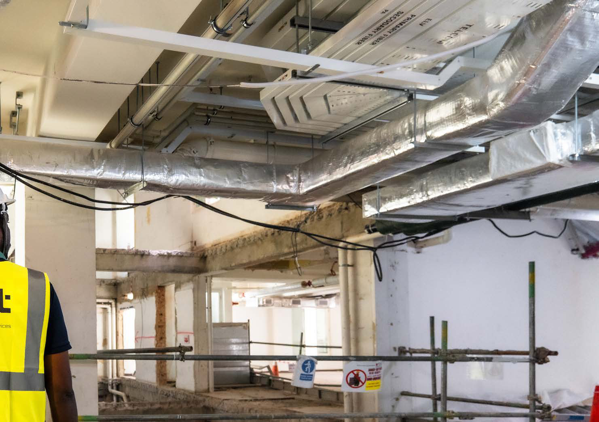

The project was delivered under a design and build model, giving Mint single-point responsibility for both design development and construction delivery. The in-house team carried out surveys, equipment selection, system sizing and the preparation of coordinated drawings in CAD and Revit. The design was reviewed and endorsed by Qualified Professionals, Professional Engineers and Licensed Plumbers to ensure statutory compliance.

A standout feature of the development was the integration of EV charging technology. Early investigations identified that the existing incoming electrical capacity was insufficient to support the proposed load. Mint designed and coordinated the required power upgrade.
Further surveys revealed that the existing external water and sanitary pipework did not meet current standards, requiring full replacement. The sprinkler and fire alarm systems needed upgrading, along with the wider LV electrical distribution, air-conditioning and ventilation systems. The building was brought in line with current codes and performance expectations.
Through early contractor involvement, Mint overlapped traditional project phases to compress the delivery programme. Once the basis of design, budget and programme were agreed, site preparation commenced in parallel with detailed design development. The condition of the building necessitated a full strip-out, carried out efficiently due to early access and advance planning.